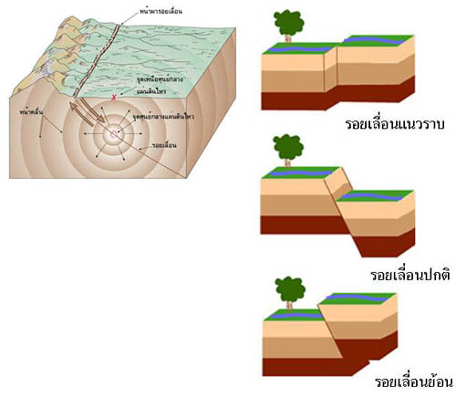

แผ่นดินไหว เป็นปรากฏการณ์สั่นสะเทือนหรือการเขย่าของพื้นผิวโลก เพื่อปรับตัวให้อยู่ในสภาวะสมดุล ซึ่งแผ่นดินไหวสามารถก่อให้เกิดความเสียหายและภัยพิบัติต่อบ้านเมือง สิ่งก่อสร้าง ที่อยู่อาศัย สิ่งมีชีวิต ส่วนสาเหตุของการเกิดแผ่นดินไหวนั้นส่วนใหญ่เกิดจากธรรมชาติ โดยแผ่นดินไหวบางลักษณะสามารถเกิดจากการกระทำของมนุษย์ได้ แต่มีความรุนแรงน้อยกว่าที่เกิดขึ้นเองจากธรรมชาติ นักธรณีวิทยาประมาณกันว่าในวันหนึ่ง ๆ จะเกิดแผ่นดินไหวประมาณ 1,000 ครั้ง ซึ่งส่วนใหญ่จะเป็นแผ่นดินไหวที่มีการสั่นสะเทือนเพียงเบา ๆ เท่านั้น คนทั่วไปจะไม่รู้สึกถึงแรงสั่นสะเทือน แผ่นดินไหวเป็นปรากฏการณ์ธรรมชาติที่เกิดจากการเคลื่อนที่ของแผ่นเปลือกโลก (แนวระหว่างรอยต่อธรณีภาค) ทำให้เกิดการเคลื่อนตัวของชั้นหินขนาดใหญ่เลื่อน เคลื่อนที่ หรือแตกหักและเกิดการโอนถ่ายพลังงานศักย์ ผ่านในชั้นหินที่อยู่ติดกัน พลังงานศักย์นี้อยู่ในรูปคลื่นไหวสะเทือน ศูนย์เกิดแผ่นดินไหวมักเกิดตามรอยเลื่อน อยู่ในระดับความลึกต่าง ๆ ของผิวโลก เท่าที่เคยวัดได้ลึกสุดอยู่ในชั้นแมนเทิล ส่วนจุดที่อยู่ในระดับสูงกว่า ณ ตำแหน่งผิวโลก เรียกว่า จุดเหนือศูนย์เกิดแผ่นดินไหว โดยการศึกษาเรื่องแผ่นดินไหวและคลื่นสั่นสะเทือนที่ถูกส่งออกมา เรียกว่า วิทยาแผ่นดินไหว เมื่อจุดเหนือศูนย์เกิดแผ่นดินไหวของแผ่นดินไหวขนาดใหญ่อยู่นอกชายฝั่ง อาจเกิดคลื่นสึนามิตามมาได้ นอกจากนี้ แผ่นดินไหวยังอาจก่อให้เกิดดินถล่ม และบางครั้งกิจกรรมภูเขาไฟตามมาได้
แผ่นดินไหวจากการกระทำของมนุษย์ มีทั้งทางตรงและทางอ้อม เช่น การระเบิด การทำเหมือง สร้างอ่างเก็บน้ำหรือเขื่อนใกล้รอยเลื่อน การทำงานของเครื่องจักรกล การจราจร รวมถึงการเก็บขยะนิวเคลียร์ไว้ใต้ดิน เป็นต้น การสร้างเขื่อนและอ่างเก็บน้ำขนาดใหญ่ ซึ่งอาจพบปัญหาการเกิดแผ่นดินไหว เนื่องจากน้ำหนักของน้ำในเขื่อนกระตุ้นให้เกิดการปลดปล่อยพลังงาน ทำให้สภาวะความเครียดของแรงในบริเวณนั้นเปลี่ยนแปลงไป รวมทั้งทำให้แรงดันของน้ำเพิ่มสูงขึ้น ส่งผลให้เกิดพลังงานต้านทานที่สะสมตัวในชั้นหิน เรียกแผ่นดินไหวลักษณะนี้ว่า แผ่นดินไหวท้องถิ่น ส่วนมากจะมีศูนย์กลางอยู่ที่ระดับความลึก 5 - 10 กิโลเมตร ขนาดและความถี่ของการเกิดแผ่นดินไหวจะลดลงเรื่อย ๆ จนกระทั่งเข้าสู่ภาวะปกติ รายงานการเกิดแผ่นดินไหวในลักษณะเช่นนี้เคยมีที่ เขื่อนฮูเวอร์ ประเทศสหรัฐอเมริกา เมื่อ พ.ศ. 2488 แต่มีความรุนแรงเพียงเล็กน้อย เขื่อนการิบา ประเทศซิมบับเว เมื่อ พ.ศ. 2502 เขื่อนครีมัสต้า ประเทศกรีซ เมื่อ พ.ศ. 2506 และครั้งที่มีความรุนแรงครั้งหนึ่งเกิดจากเขื่อนคอยน่า ในประเทศอินเดีย เมื่อ พ.ศ. 2508 ซึ่งมีขนาดถึง 6.5 ทำให้มีผู้เสียชีวิตกว่า 180 คน[1] การทำเหมืองในระดับลึก ซึ่งในการทำเหมืองจะมีการระเบิดหิน ซึ่งอาจทำให้เกิดแรงสั่นสะเทือนขึ้นได้ การสูบน้ำใต้ดิน การสูบน้ำใต้ดินขึ้นมาใช้มากเกินไป รวมถึงการสูบน้ำมันและแก๊สธรรมชาติ ซึ่งอาจทำให้ชั้นหินที่รองรับเกิดการเคลื่อนตัวได้ การทดลองระเบิดนิวเคลียร์ใต้ดิน ก่อให้เกิดความสั่นสะเทือนจากการทดลองระเบิด ซึ่งมีส่วนทำให้เกิดผลกระทบต่อชั้นหินที่อยู่ใต้เปลือกโลก